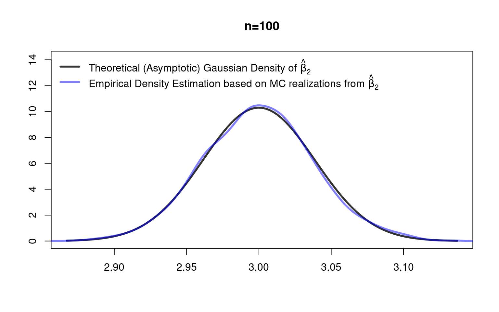
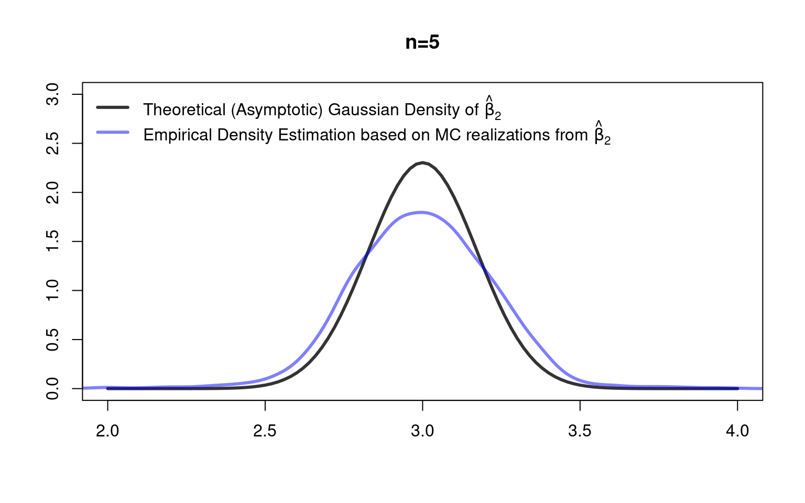

## Function to generate artificial data
myDataGenerator <- function(n, beta){
##
X <- cbind(rep(1, n),
runif(n, -4, 4),
runif(n, -5, 5))
##
eps <- runif(n, - 0.5 * abs(X[,2]), + 0.5 * abs(X[,2]))
Y <- X %*% beta + eps
data <- data.frame("Y"=Y, "X_1"=X[,1], "X_2"=X[,2], "X_3"=X[,3])
##
return(data)
}6 Large Sample Inference
The content of this chapter is very much inspired by the book by Hayashi (2000).
6.1 Tools for Asymptotic Statistics
6.1.1 Modes of Convergence
In the following we will discuss the four most important convergence concepts for sequences of random variables \((z_1,z_2,\dots,z_n)\) shortly denoted by \(\{z_n\}\). Non-random scalars (or vectors or matrices) will be denoted by Greek letters such as \(\alpha\).
Four Important Modes of Convergence
Definition 6.1 (Convergence in Probability) A sequence of random scalars \(\{z_n\}\) converges in probability to a constant (non-random) \(\alpha\) if, for any (arbitrarily small) \(\varepsilon>0\), \[\begin{eqnarray*} \lim_{n\to\infty} P\left(|z_n-\alpha|>\varepsilon\right)=0. \end{eqnarray*}\] We write: \(\operatorname{plim}_{n\to\infty}z_n=\alpha\), or \(z_n\to_{p}\alpha\). Convergence in probability of a sequence of random vectors (or matrices) \(\{z_n\}\) to a constant vector (or matrix) \(\alpha\) requires element-wise convergence in probability.
Definition 6.2 (Almost Sure Convergence) A sequence of random scalars \(\{z_n\}\) converges almost surely to a constant (non-random) \(\alpha\) if \[\begin{eqnarray*} P\left(\lim_{n\to\infty}z_n=\alpha\right)=1. \end{eqnarray*}\] We write: \(z_n\to_{as}\alpha\). Almost sure convergence of a sequence of random vectors (or matrices) \(\{z_n\}\) to a constant vector (or matrix) \(\alpha\) requires element-wise almost sure convergence.
Almost sure convergence is (usually) rather hard to derive, since the probability is about an event concerning an infinite sequence. Fortunately, however, there are established strong laws of large numbers that we can use for showing almost sure convergence.
Definition 6.3 (Convergence in Mean Square) A sequence of random scalars \(\{z_n\}\) converges in mean square (or in quadratic mean) to a constant (non-random) \(\alpha\) if \[\begin{eqnarray*} \lim_{n\to\infty}E\left((z_n-\alpha)^2\right)=0 \end{eqnarray*}\] We write: \(z_n\to_{ms}\alpha\). If \(z_n\) is an estimator (e.g., \(z_n=\hat\beta_{k,n}\)) the expression \(E\left((z_n-\alpha)^2\right)\) is termed the mean squared error: \(\text{MSE}(z_n)=E\left((z_n-\alpha)^2\right)\). Mean square convergence of a sequence of random vectors (or matrices) \(\{z_n\}\) to a deterministic vector (or matrix) \(\alpha\) requires element-wise mean square convergence.
Definition 6.4 (Convergence in Distribution) Let \(F_n\) be the cumulative distribution function (cdf) of \(z_n\) and \(F\) the cdf of \(z\). A sequence of random scalars \(\{z_n\}\) converges in distribution to a random scalar \(z\) if for all \(t\) such that \(F(t)\) is continuous at \(t\), \[\begin{eqnarray*} \lim_{n\to\infty}F_n(t)=F(t). \end{eqnarray*}\] We write: \(z_n\to_{d} z\) and call \(F\) the asymptotic (or limit) distribution of \(z_n\). Sometimes you will see statements like \(z_n\to_{d} N(0,1)\) or \(z_n\overset{a}{\sim}N(0,1)\), which should be read as \(z_n\to_{d} z\), where \(z\sim N(0,1)\).
A stochastic sequence \(\{z_n\}\) can also convergence in distribution to a deterministic scalar \(\alpha\). In this case \(\alpha\) is treated as a degenerated random variable with cdf \[ F_\alpha(t)=\left\{\begin{matrix}0&\text{if}\;\;t<\alpha\\ 1&\text{if}\;\;t\geq\alpha\end{matrix}\right. \]
Definition 6.5 (Multivariate Convergence in Distribution) Let \(z_n,z\in\mathbb{R}^K\) be \(K\)-dimensional random variables, then \[ z_n\to_{d} z\text{\quad if and only if \quad}\lambda'z_n\to_{d}\lambda'z \] for any \(\lambda\in\mathbb{R}^K\).
This statement is known as the Cramer Wold Device. It is needed since element-wise convergence in distribution does generally not imply convergence of the joint distribution of \(z_n\) to the joint distribution of \(z\); except, if all elements are independent from each other.
Relations among Modes of Convergence
Lemma 6.1 (Relationship among the four modes of convergence) The following relationships hold:
- \(z_n\to_{ms}\alpha\Rightarrow z_n\to_{p}\alpha.\)
- \(z_n\to_{as}\alpha\Rightarrow z_n\to_{p}\alpha.\)
- \(z_n\to_{d}\alpha\Leftrightarrow z_n\to_{p}\alpha.\) I.e., if the limiting random variable is a constant (i.e., a degenerated random variable), then convergence in distribution is equivalent to convergence in probability.
Proofs can be found, e.g., here: https://www.statlect.com/asymptotic-theory/relations-among-modes-of-convergence
6.1.2 Continuous Mapping Theorem (CMT)
Lemma 6.2 (Preservation of convergence for continuous transformations (or “continuous mapping theorem (CMT)”)) Suppose \(\{z_n\}\) is a stochastic sequence of random scalars, vectors, or matrices and that \(a(\cdot)\) is a continuous function that does not depended on \(n\). Then
- \(z_n\to_{p}\alpha\Rightarrow a(z_n)\to_{p} a(\alpha)\)
- \(z_n\to_{as} \alpha\Rightarrow a(z_n)\to_{as} a(\alpha)\)
- \(z_n\to_{d}\alpha\Rightarrow a(z_n)\to_{d} a(\alpha)\)
Proof can be found, e.g., in Asymptotic Statistics, van der Vaart (1998), Theorem 2.3. Or here: https://www.statlect.com/asymptotic-theory/continuous-mapping-theorem
Note: The CMT does not hold for m.s.-convergence except for the case where \(a(.)\) is linear.
Examples: As a consequence of the CMT (Lemma 6.2) we have that the usual arithmetic operations preserve convergence in probability (equivalently for almost sure convergence and convergence in distribution):
- If \(x_n\to_{p} \beta\) and \(y_n\to_{p} \gamma\) then \(x_n+y_n\to_{p} \beta+\gamma\)
- If \(x_n\to_{p} \beta\) and \(y_n\to_{p} \gamma\) then \(x_n\cdot y_n\to_{p} \beta\cdot\gamma\)
- If \(x_n\to_{p} \beta\) and \(y_n\to_{p} \gamma\) then \(x_n/y_n\to_{p} \beta/\gamma\), provided that \(\gamma\neq 0\)
- If \(X_n'X_n\to_{p} \Sigma_{X'X}\) then \((X_n'X_n)^{-1}\to_{p} \Sigma_{X'X}^{-1}\), provided \(\Sigma_{X'X}\) is a nonsingular matrix.
6.1.3 Slutsky Theorem
The following results are concerned with combinations of convergence in probability and convergence in distribution. These are particularly important for the derivation of the asymptotic distribution of estimators.
Lemma 6.3 (Slutsky Theorem) Let \(x_n\) and \(y_n\) denote sequences of random scalars or vectors and let \(A_n\) denote a sequences of random matrices. Moreover, \(\alpha\) and \(A\) are deterministic limits of appropriate dimensions and \(x\) is a random limit of appropriate dimension.
- If \(x_n\to_{d} x\)and \(y_n\to_{p} \alpha\) then;; \(x_n+y_n\to_{d} x+\alpha\)
- If \(x_n\to_{d} x\)and \(y_n\to_{p} 0\) then;; \(x_n'y_n\to_{p} 0\)
- If \(x_n\to_{d} x\)and \(A_n\to_{p} A\) then;; \(A_nx_n\to_{d} Ax\), where it is assumed that \(A_n\) and \(x_n\) are “conformable”(i.e., the matrix- and vector-dimensions fit to each other).
Important special case:
If \(x_n\to_{d} N(0,\Sigma)\)and \(A_n\to_{p} A\) then;; \(A_nx_n\to_{d} N(0,A\Sigma A')\)
Proofs can be found, e.g., in Asymptotic Statistics, van der Vaart, Theorem 2.8. Or here: https://www.statlect.com/asymptotic-theory/Slutsky-theorem
Note: Sometimes, only parts (i) and (ii) of Lemma 6.3 are called “Slutsky’s theorem.”
6.1.4 Law of Large Numbers (LLN) and Central Limit Theorem (CLT)
So far, we discussed the definitions of the four most important convergence modes, their relations among each other, and basic theorems (CMT and Slutsky) about functionals of stochastic sequences. Though, we still lack of tools that allow us to actually show that a stochastic sequence convergences (in some of the discussed modes) to some limit.
In the following we consider the stochastic sequences \(\{\bar{z}_n\}\) of sample means \(\bar{z}_n=n^{-1}\sum_{i=1}^nz_i\), where \(z_i\), \(i=1,\dots,n\), are (scalar, vector, or matrix-valued) random variables. Remember: the sample mean \(\bar{z}_n\) is an estimator of the deterministic population mean \(\mu\).
Weak LLNs, strong LLNs, and CLTs tell us conditions under which arithmetic means \(\bar{z}_n=n^{-1}\sum_{i=1}^nz_i\) converge: \[\begin{eqnarray*} \bar{z}_n&\to_{p}&\mu\quad\text{(weak LLN)}\\ \bar{z}_n&\to_{as}&\mu\quad\text{(strong LLN)}\\ \sqrt{n}(\bar{z}_n-\mu)&\to_{d}&N(0,\sigma^2)\quad\text{(CLT)} \end{eqnarray*}\]
In the following we introduce the most well-known versions of the weak, the strong LLN, and the CLT.
Theorem 6.1 (Weak LLN (Chebychev)) If \(\lim_{n\to\infty} E(\bar{z}_n)=\mu\) and \(\lim_{n\to\infty}Var(\bar{z}_n)=0\) then \(\bar{z}_n\to_{p}\mu.\)
Proof can be found, for instance, here: https://www.statlect.com/asymptotic-theory/law-of-large-numbers
Theorem 6.2 (Strong LLN (Kolmogorov)) If \(\{z_i\}\) is an iid sequence and \(E(z_i)=\mu\) then \(\bar{z}_n\to_{as}\mu.\)
Proof can be found, e.g., in Linear Statistical Inference and Its Applications, Rao (1973), pp. 112-114.
Note: The weak and the strong LLN for random vectors follow from requiring element-by-element convergence.
Theorem 6.3 (CLT (Lindeberg-Levy)) If \(\{z_i\}\) is an iid sequence and \(E(z_i)=\mu\) and \(Var(z_i)=\sigma^2\) then \[ \sqrt{n}(\bar{z}_n-\mu)\to_{d} N(0,\sigma^2)\quad\text{as}\quad n\to\infty \]
Proof can be found, e.g., in Asymptotic Statistics, van der Vaart (1998), Theorem 2.17.
The Lindeberg-Levy CLT for \(K\)-dimensional random vectors follows from our above discussion on “Multivariate Convergence in Distribution.”From this we know that if \(\bar{z}_n\in\mathbb{R}^K\) and \(\mu\in\mathbb{R}^K\), then \[\sqrt{n}(\bar{z}_n-\mu)\to_{d} \mathcal{N}(0,\Sigma)\quad\Leftrightarrow\quad \sqrt{n}(\lambda'\bar{z}_n-\lambda'\mu)\to_{d} \mathcal{N}(0,\lambda'\Sigma\lambda),\] for any \(\lambda\in\mathbb{R}^K\).
That is, to apply the Lindeberg-Levy CLT (Theorem 6.3) to multivariate (e.g., \(K\)-dimensional) stochastic sequences, we need to check whether the univariate stochastic sequence \(\{\lambda'z_i\}\) is i.i.d. with \(E(\lambda'z_i)=\lambda'\mu\) and \(Var(\lambda'z_i)=\lambda'\Sigma\lambda\) for any \(\lambda\in\mathbb{R}^K\). This is the case if the multivariate (\(K\)-dimensional) stochastic sequence \(\{z_i\}\) is an i.i.d. sequence with \(E(z_i)=\mu\) and \(Var(z_i)=\Sigma\).
Note: The LLNs and the CLT are stated with respect to sequences of sample means \(\{\bar{z}_n\}\); i.e., the simplest estimators you probably can think of. We will see, however, that this is all we need in order to analyze also more complicated estimators such as the OLS estimator.
6.1.5 Estimators as a Sequences of Random Variables
Our concepts above readily apply to general scalar-valued (univariate) or vector-valued (\(K\)-dimensional) estimators, say \(\hat\theta_n\in\mathbb{R}^K\), that are computed from i.i.d. random samples.
(Weak) Consistency: We say that an estimator \(\hat\theta_n\) is (weakly) consistent for \(\theta\) if \[\hat\theta_n\to_{p}\theta\quad\text{as}\quad n\to\infty\]
Asymptotic Bias: The asymptotic bias of an estimator \(\hat\theta_n\) of some true parameter \(\theta\) is defined as: \[\text{ABias}(\hat\theta_n)=\lim_{n\to\infty}E(\hat\theta_n)-\theta\] If \(\text{ABias}(\hat\theta_n)=0\), then \(\hat\theta\) is called an asymptotically unbiased.
Asymptotic Normality: A consistent estimator \(\hat\theta_n\) is asymptotically normal distributed if \[\sqrt{n}(\hat\theta_n-\theta)\to_{d} \mathcal{N}(0,\Sigma)\quad\text{as}\quad n\to\infty\] where \(\lim_{n\to\infty}Var(\sqrt{n}(\hat\theta_n-\theta))=\lim_{n\to\infty}Var(\sqrt{n}\hat\theta_n)=\Sigma\) as called the asymptotic variance of \(\sqrt{n}(\hat\theta_n-\theta)\).
\(\sqrt{n}\)-consistent: Consistent estimators \(\hat{\theta}_n\to_{p}\theta\) are called \(\sqrt{n*\)-consistent} if \[\sqrt{n}(\hat\theta_n-\theta)\to_{d} z \quad\text{as}\quad n\to\infty\] If additionally the random vector \(z\) is normal distributed, then \(\hat\theta_n\) is often called consistent and asymptotically normal.*
6.2 Asymptotics under the Classic Regression Model
Given the above introduced machinery on asymptotic concepts and results, we can now proof that the OLS estimators \(\hat\beta\) and \(s_{UB}^2\) applied to the classic regression model (defined by Assumptions 1-4 in Chapter 3 are both consistent, and that \(\hat\beta\) is asymptotically normal distributed as \(n\to\infty\). That is, we can drop the unrealistic normality and spherical errors assumption (Assumption 4\(^\ast\)), but still use the usual test statistics (\(t\)-test, \(F\)-test); as long as the sample size \(n\) is “large.”
However, before we can formally state the asymptotic properties, we, first, need to adjust our “data generating process”assumption (Assumption 1) such that we can apply Kolmogorov’s strong LLN and Lindeberg-Levy’s CLT. Second, we need to adjust the rank assumption (Assumption 3), such that the full column rank of \(X\) is guaranteed for the limiting case as \(n\to\infty\), too. Assumptions 2 and 4 from Chapter 3 are assumed to hold (and do not need to be changed).
Assumption 1\(^\ast\): Data Generating Process (for Asymptotics) Assumption 1 of Chapter 3 applies, but additionally we assume that \((\varepsilon_i, X_i)\in\mathbb{R}^{K+1}\) (or equivalently \((Y_i,X_i)\in\mathbb{R}^{K+1}\)) is jointly i.i.d. for all \(i=1,\dots,n\), with existing and finite second moments for \(X_i\) and fourth moments for \(\varepsilon_i\).
Note 1: The fourth moment of \(\varepsilon_i\) is actually only needed for Theorem 6.7; for the rest two moments are sufficient.
Note 2: The above adjustment of Assumption 1 is far less restrictive than assuming that the error-terms \(\varepsilon_i\) are i.i.d. normally distributed and independent from \(X_i\) (as it’s necessary for small sample inference in Chapter 5).
Assumption 3\(^\ast\): Rank Condition (for Asymptotics) The \((K\times K)\) matrix \[\Sigma_{X'X}:=E(S_{X'X})=E(n^{-1}X'X)=E(X_iX_i')\] has full rank \(K\). I.e., \(\Sigma_{X'X}\) is nonsingular and invertible.
Theorem 6.4 (Consistency of \(S_{X'X}^{-1}\)) Under Assumption 1\(^\ast\) and 3\(^\ast\) we have that \[\left(\frac{1}{n}X'X\right)^{-1}=S_{X'X}^{-1}\quad\to_{p}\quad\Sigma_{X'X}^{-1}\quad\text{as}\quad n\to\infty\]
Proof is done in the lecture.
Theorem 6.5 (Consistency of \(\hat\beta\)) Under Assumption 1\(^\ast\), 2 and 3\(^\ast\) we have that \[\hat\beta_n\to_{p}\beta\quad\text{as}\quad n\to\infty\]
Proof is done in the lecture.
Furthermore, we can show that the appropriately scaled (by \(\sqrt{n}\)) sampling error \(\hat\beta-\beta\) of the OLS estimator is asymptotically normal distributed.
Theorem 6.6 (Sampling error limiting normality (the classic case)) For simplicity, we consider here the special case of spherical errors (\(Var(\varepsilon|X)=\sigma^2I_n\)). Under Assumption 1\(^\ast\), 2 and 3\(^\ast\) we then have that \[\sqrt{n}(\hat\beta_n-\beta)\to_{d} \mathcal{N}\left(0,\sigma^2 \Sigma^{-1}_{X'X}\right)\quad\text{as}\quad n\to\infty\]
Proof is done in the lecture.
In principle, we can derive the usual test statistics from the latter result. Though, as long as we do not know (we usually don’t) \(\sigma^2\) and \(\Sigma_{X'X}\) we need to plug-in the (consistent!) estimators \(S_{X'X}^{-1}\) and \(s_{UB}^2\), where the consistency of the former estimator is provided by Theorem 6.4 and the consistency of \(s_{UB}^2\) is provided by the following result.
Theorem 6.7 (Consistency of \(s^2_{UB}\)) \[s_{UB}^2\to_{p}\sigma^2\quad\text{as}\quad n\to\infty\]
Proof is skipped, but a detailed proof can be found here: https://www.statlect.com/fundamentals-of-statistics/OLS-estimator-properties
6.2.1 The Case of Heteroscedasticity
Theorem 6.6 can also be stated and proofed for conditionally heteroscedastic error terms. In this case one gets \[ \sqrt{n}(\hat\beta_n-\beta)\to_{d} \mathcal{N}\left(0,\Sigma_{X'X}^{-1}E(\varepsilon^2_iX_iX_i')\Sigma_{X'X}^{-1}\right)\quad\text{as}\quad n\to\infty \tag{6.1}\] where \(\Sigma_{X'X}^{-1}E(\varepsilon_i^2X_iX_i')\Sigma_{X'X}^{-1}\) (i.e., the asymptotic variance of \(\sqrt{n}(\hat\beta_n-\beta)\)) is usually unknown and needs to be estimated from the data by \[ S_{X'X}^{-1}\widehat{E}(\varepsilon^2_iX_iX_i')S^{-1}_{X'X}\to_{p} \Sigma_{X'X}^{-1}E(\varepsilon^2_iX_iX_i')\Sigma_{X'X}^{-1}\quad\text{as}\quad n\to\infty, \] where \(\widehat{E}(\varepsilon^2_iX_iX_i')\) denotes some consistent estimator of \(E(\varepsilon^2X_iX_i')\) such as one of the following choices:
- HC0: \(\widehat{E}(\varepsilon^2_iX_iX_i')=\frac{1}{n}\sum_{i=1}^n\hat\varepsilon_i^2X_iX_i'\)
- HC1: \(\widehat{E}(\varepsilon^2_iX_iX_i')=\frac{1}{n}\sum_{i=1}^n\frac{n}{n-K}\hat\varepsilon_i^2X_iX_i'\)
- HC2: \(\widehat{E}(\varepsilon^2_iX_iX_i')=\frac{1}{n}\sum_{i=1}^n\frac{\hat{\varepsilon}_{i}^{2}}{1-h_{i}}X_iX_i'\)
- HC3: \(\widehat{E}(\varepsilon^2_iX_iX_i')=\frac{1}{n}\sum_{i=1}^n\frac{\hat{\varepsilon}_{i}^{2}}{\left(1-h_{i}\right)^{2}}X_iX_i'\text{\quad($\leftarrow$ Most often used)}\)
- HC4: \(\widehat{E}(\varepsilon^2_iX_iX_i')=\frac{1}{n}\sum_{i=1}^n\frac{\hat{\varepsilon}_{i}^{2}}{\left(1-h_{i}\right)^{\delta_{i}}}X_iX_i'\)
Note: In order to show that any of the above versions (HC0-4) of \(\widehat{E}(\varepsilon^2_iX_iX_i')\) is a consistent estimator of \(E(\varepsilon^2_iX_iX_i')\) we actually need to assume that the explanatory variables in \(X\) have finite fourth moments (see Chapter 2.5 of Hayashi (2000)). So, for this, we would need to make our Assumption 1\(^\ast\) more restrictive (so far, only two moments are assumed for \(X\)).
6.2.2 Hypothesis Testing and Confidence Intervals
From our asymptotic results under the classic regression model (Assumptions 1\(^\ast\), 2, 3\(^\ast\), and 4) we get the following results important for testing statistical hypothesis.
6.2.2.1 Robust Hypothesis Testing: Multiple Parameters
Let us reconsider the following system of \(q\)-many null hypotheses: \[\begin{align*} H_0: \underset{(q\times K)}{R}\underset{(K\times 1)}{\beta} - \underset{(q\times 1)}{r} = \underset{(q\times 1)}{0}, \end{align*}\] where the \((q \times K)\) matrix \(R\) and the \(q\)-vector \(r=(r_{1},\dots,r_{q})'\) are chosen by the statistician to specify her/his null hypothesis about the unknown true parameter vector \(\beta\). To make sure that there are no redundant equations, it is required that \(\operatorname{rank}(R)=q\).
By contrast to the multiple parameter tests for small samples (see Section 5.1), we can work here with a heterosedasticity robust test statistic which is applicable for heteroscedastic error terms: \[ W=n(R\hat\beta_n -r)'[R\,S_{X'X}^{-1}\widehat{E}(\varepsilon^2_iX_iX_i')S^{-1}_{X'X}\,R']^{-1}(R\hat\beta_n-r)\overset{H_0}{\to}_d\chi^2(q) \tag{6.2}\] as \(n\to\infty\). The price to pay is that the distribution of the test statistic under the null hypothesis is only valid asymptotically for large \(n\). That is, the critical values taken from the asymptotic distribution will be useful only for “large”samples sizes. In case of homoscedastic error terms, one can substitute \(S_{X'X}^{-1}\widehat{E}(\varepsilon^2_iX_iX_i')S^{-1}_{X'X}\) by \(s_{UB}^2S_{X'X}^{-1}\).
Finite-sample correction: In order to improve the finite-sample performance of this test, one usually uses the \(F_{q,n-K}\) distribution with \(q\) and \(n-K\) degrees of freedoms instead of the \(\chi^2(q)\) distribution. Asymptotically (\(n\to\infty\)), \(F_{q,n-K}\) is equivalent to \(\chi^2(q)\). However, for finite sample sizes \(n\) (i.e., the practically relevant case) \(F_{q,n-K}\) leads to larger critical values which helps to account for the estimation errors in \(S_{X'X}^{-1}\widehat{E}(\varepsilon^2_iX_iX_i')S^{-1}_{X'X}\) (or in \(s_{UB}^2S_{X'X}^{-1}\)) which are otherwise neglected by the pure asymptotic perspective.
6.2.2.2 Robust Hypothesis Testing: Single Parameters
Let us reconsider the case of hypotheses about only one parameter \(\beta_k\), with \(k=1,\dots,K\) \[\begin{equation*} \begin{array}{ll} H_0: & \beta_k=r\\ H_A: & \beta_k\ne r\\ \end{array} \end{equation*}\] We can selecting the \(k\)th diagonal element of the test-statistic in Equation 6.2 and taking the square root yields \[ t=\frac{\sqrt{n}\left(\hat{\beta}_k-r\right)}{\sqrt{\left[S_{X'X}^{-1}\widehat{E}(\varepsilon^2_iX_iX_i')S^{-1}_{X'X}\right]_{kk}}}\overset{H_0}{\to}_d\mathcal{N}(0,1). \] This \(t\) test statistic allows for heteroscedastic error terms. In case of homoscedastic error terms, one can substitute \([S_{X'X}^{-1}\widehat{E}(\varepsilon^2_iX_iX_i')S^{-1}_{X'X}]_{kk}\) by \(s_{UB}^2[S_{X'X}^{-1}]_{kk}\).
Finite-sample correction: In order to improve the finite-sample performance of this \(t\) test, one usually uses the \(t_{(n-K)}\) distribution with \(n-K\) degrees of freedoms instead of the \(\mathcal{N}(0,1)\) distribution. Asymptotically (\(n\to\infty\)), \(t_{(n-K)}\) is equivalent to \(\mathcal{N}(0,1)\). However, for finite sample sizes \(n\) (i.e., the practically relevant case) \(t_{n-K}\) leads to larger critical values which helps to account for the estimation errors in \([S_{X'X}^{-1}\widehat{E}(\varepsilon^2_iX_iX_i')S^{-1}_{X'X}]_{kk}\) (or in \(s_{UB}^2[S_{X'X}^{-1}]_{kk}\)) which are otherwise neglected by the pure asymptotic perspective.
6.2.2.3 Robust Confidence Intervals
Following the derivations in Chapter Section 5.4, but using the expression for the robust standard errors, we get the following heteroscedasticity robust (random) \((1-\alpha)\cdot 100\%\) confidence interval \[ \operatorname{CI}_{1-\alpha}= \left[\hat\beta_k\pm t_{1-\alpha/2,n-K}\sqrt{n^{-1}[S_{X'X}^{-1}\widehat{E}(\varepsilon^2_iX_iX_i')S^{-1}_{X'X}]_{kk}}\right]. \] Here, the coverage probability is an asymptotic coverage probability with \(P(\beta_k\in\operatorname{CI}_{1-\alpha})\to 1-\alpha\) as \(n\to\infty\).
6.3 Practice: Large Sample Inference
Let’s apply the above asymptotic inference methods using R. As in Chapter Section 5.5 we, first, program a function myDataGenerator() which allows us to generate data from the following model, i.e., from the following fully specified data generating process: \[\begin{align*}
Y_i &=\beta_1+\beta_2X_{i2}+\beta_3X_{i3}+\varepsilon_i,\qquad i=1,\dots,n\\
\beta &=(\beta_1,\beta_2,\beta_3)'=(2,3,4)'\\
X_{i2}&\sim U[-4,4]\\
X_{i3}&\sim U[-5,5]\\
\varepsilon_i|X_i&\sim U[-0.5 |X_{i2}|, 0.5 |X_{i2}|],
\end{align*}\] where \((Y_i,X_i)\) is assumed i.i.d. across \(i=1,\dots,n\) with \(X_{i2}\) and \(X_{i3}\) being independent of each other. Note that, by contrast to Chapter Section 5.5, the error terms are conditionally heteroscedastic (\(Var(\varepsilon_i|X_i)=\frac{1}{12}X_{i2}^2\)) and not Gaussian.
As a side note: The unconditional variance follows by the law of total variance and is given by \[\begin{align*} Var(\varepsilon_i) &=E(Var(\varepsilon_i|X_i))+Var(E(\varepsilon_i|X_i))\\ &=E\left(\frac{1}{12}X_{i2}^2\right)+0\\ &=\frac{1}{12}\left(\frac{1}{12}(4-(-4))^2\right)=\frac{4}{9}. \end{align*}\]
Moreover, by contrast to Section 5.5, we here do not need to sample new realizations of \(Y_i\) conditionally on a given data matrix \(X\) since the asymptotically (for large \(n\)) the distribution of \(\hat\beta\) does not depend on a random realization of \(X\). (Therefore, the large sample normality result in Equation 6.1 does not need a conditioning on \(X\).) Consequently, the option to condition on \(X\) is removed in the following R-function myDataGenerator().
6.3.1 Normally Distributed \(\hat\beta\) for \(n\to\infty\)
The above data generating process fulfills our regulatory assumptions Assumption 1\(^*\), 2, 3\(^*\), and 4. So, by theory, the estimators \(\hat\beta_k\) should be normal distributed for large sample sizes \(n\) – unconditionally on \(X\) and even for heteroscedastic error terms. \[ \sqrt{n}\left(\hat\beta_k-\beta_k\right)\to_d\mathcal{N}\left(0,\left[\Sigma_{X'X}^{-1}E(\varepsilon^2_iX_iX_i')\Sigma_{X'X}^{-1}\right]_{kk}\right) \] Or: \[ \hat\beta_k\to_d\mathcal{N}\left(\beta_k, \;n^{-1}\;\left[\Sigma_{X'X}^{-1}E(\varepsilon^2_iX_iX_i')\Sigma_{X'X}^{-1}\right]_{kk}\right) \] Mathematically, the latter is a bit sloppy since the right hand side of \(\to_d\) depends on \(n\), i.e., is not the stable limit object for \(n\to\infty\). However, this sloppiness is nevertheless instructive since it gives us the approximative distribution for given largish sample sizes like \(n=100\).
For our above specified data generating process, we have
From the assumed distributions of \(X_{i2}\) and \(X_{i3}\) we have that: \[ \Sigma_{X'X}=E(S_{X'X})=E(X_iX_i') =\left(\begin{matrix}1&0&0\\0&E(X_{i2}^2)&0\\0&0&E(X_{i3}^2)\end{matrix}\right) =\left(\begin{matrix}1&0&0\\0&\frac{16}{3}&0\\0&0&\frac{25}{3}\end{matrix}\right) \] The above result follows from observing that \(E(X^2)=Var(X)\) if \(X\) has mean zero, and that the variance of uniform \(U[a,b]\) distributed random variables is given by \(\frac{1}{12}(b-a)^2\).
Moreover, \(E(\varepsilon^2_iX_iX_i')=E(X_iX_i'E(\varepsilon^2_i|X_i))=E\left(X_iX_i'\left(\frac{1}{12}X_{i2}^2\right)\right)\) such that \[\begin{align*} E(\varepsilon^2_iX_iX_i') &=\left(\begin{matrix}E\left(\frac{1}{12}X_{i2}^2\right)&0&0\\ 0&E\left(X_{i2}^2\cdot\frac{1}{12}X_{i2}^2\right)&0\\0&0&E\left(X_{i3}^2\cdot\frac{1}{12}X_{i2}^2\right) \end{matrix}\right)\\ &=\left(\begin{matrix}\frac{1}{12}E\left(X_{i2}^2\right)&0&0\\ 0&\frac{1}{12}E\left(X_{i2}^4\right)&0\\0&0&\frac{1}{12}E\left(X_{i2}^2\right)\,E\left(X_{i3}^2\right) \end{matrix}\right)\\ &=\left(\begin{matrix}\frac{1}{12}\frac{16}{3}&0&0\\ 0&\frac{1}{12}\frac{256}{5}&0\\ 0&0&\frac{1}{12}\frac{16}{3}\frac{25}{3}\end{matrix}\right) =\left(\begin{matrix}\frac{4}{9}&0&0\\0&\frac{64}{15}&0\\0&0&\frac{100}{27}\end{matrix}\right) \end{align*}\] The above result follow from observing that for \(X\sim U[a,b]\) one has \(E(X^k)=\frac{b^{k+1}-a^{k+1}}{(k+1)(b-a)}\), \(k=1,2,\dots\); see, for instance, Wikipedia.
So, for instance, for \(\hat{\beta}_2\) we have the following theoretical large sample distribution: \[ \hat\beta_2\to_d\mathcal{N}\left(\beta_2, \;n^{-1}\;\left[\left(\begin{matrix}1&0&0\\0&\frac{16}{3}&0\\0&0&\frac{25}{3}\end{matrix}\right)^{-1}\left(\begin{matrix}\frac{4}{9}&0&0\\0&\frac{64}{15}&0\\0&0&\frac{100}{27}\end{matrix}\right)\left(\begin{matrix}1&0&0\\0&\frac{16}{3}&0\\0&0&\frac{25}{3}\end{matrix}\right)^{-1}\right]_{22}\right) \] Let’s use a Monte Carlo simulation to check how well the theoretical large sample (\(n\to\infty\)) distribution of \(\hat\beta_2\) works as an approximative distribution for a practical largish sample size of \(n=100\).
set.seed(123)
n <- 100 # a largish sample size
beta_true <- c(2,3,4) # true data vector
## Mean and variance of the true asymptotic
## normal distribution of beta_hat_2:
# true mean
beta_true_2 <- beta_true[2]
# true variance
var_true_beta_2 <- (solve(diag(c(1, 16/3, 25/3))) %*%
diag(c(4/9, 64/15, 100/27))%*%
solve(diag(c(1, 16/3, 25/3))))[2,2]/n
## Let's generate 5000 realizations from beta_hat_2, and check
## whether their distribution is close to the true normal
## distribution.
## (We don't condition on X since the theoretical limit
## distribution is unconditional on X)
rep <- 5000 # MC replications
beta_hat_2 <- rep(NA, times=rep)
##
for(r in 1:rep){
MC_data <- myDataGenerator(n = n,
beta = beta_true)
lm_obj <- lm(Y ~ X_2 + X_3, data = MC_data)
beta_hat_2[r] <- coef(lm_obj)[2]
}
## Compare:
## True beta_2 versus average of beta_hat_2 estimates
c(beta_true_2, round(mean(beta_hat_2), 4))[1] 3.0000 2.9998Good! As expected, the average of the 5000 simulated realizations of \(\hat\beta_2\) is basically equal to the theoretical true mean \(E(\hat\beta_2)=\beta_2=3\).
## True variance of beta_hat_2 versus
## empirical variance of beta_hat_2 estimates
c(round(var_true_beta_2, 5), round(var(beta_hat_2), 5))[1] 0.00150 0.00147Great! The variance of the 5000 simulated realizations of \(\hat\beta_2\) is basically equal to the theoretical true variance \(Var(\hat\beta_2)=0.0015\).
## True normal distribution of beta_hat_2 versus
## empirical density of beta_hat_2 estimates
library("scales")
curve(expr = dnorm(x, mean = beta_true_2,
sd=sqrt(var_true_beta_2)),
xlab="",ylab="", col=gray(.2), lwd=3, lty=1,
xlim=range(beta_hat_2),ylim=c(0,14.1),main=paste0("n=",n))
lines(density(beta_hat_2, bw = bw.SJ(beta_hat_2)),
col=alpha("blue",.5), lwd=3)
legend("topleft", lty=c(1,1), lwd=c(3,3),
col=c(gray(.2), alpha("blue",.5)), bty="n", legend=
c(expression(
"Theoretical (Asymptotic) Gaussian Density of"~hat(beta)[2]),
expression(
"Empirical Density Estimation based on MC realizations from"~
hat(beta)[2])))
Great! The nonparametric density estimation (estimated via density()) computed from the 5000 simulated realizations of \(\hat\beta_2\) is indicating that \(\hat\beta_2\) is really normally distributed as described by our theoretical results in Theorem 6.6 (homoscedastic case) and in Equation Equation 6.1 (heteroscedastic case).
However, is the asymptotic distribution of \(\hat\beta_2\) also usable for (very) small samples like \(n=5\)? Let’s check that:
set.seed(123)
n <- 5 # a small sample size
beta_true <- c(2,3,4) # true data vector
## Mean and variance of the true asymptotic
## normal distribution of beta_hat_2:
# true mean
beta_true_2 <- beta_true[2]
# true variance
var_true_beta_2 <- (solve(diag(c(1, 16/3, 25/3)))%*%
diag(c(4/9, 64/15, 100/27))%*%
solve(diag(c(1, 16/3, 25/3))))[2,2]/n
## Let's generate 5000 realizations from beta_hat_2, and check
## whether their distribution is close to the true normal
## distribution.
## (We don't condition on X since the theoretical limit
## distribution is unconditional on X)
rep <- 5000 # MC replications
beta_hat_2 <- rep(NA, times=rep)
##
for(r in 1:rep){
MC_data <- myDataGenerator(n = n,
beta = beta_true)
lm_obj <- lm(Y ~ X_2 + X_3, data = MC_data)
beta_hat_2[r] <- coef(lm_obj)[2]
}
## Compare:
## True beta_2 versus average of beta_hat_2 estimates
c(beta_true_2, round(mean(beta_hat_2), 4))[1] 3.0000 2.9963OK, at least on average the 5000 simulated realizations of \(\hat\beta_2\) are basically equal to the true mean \(E(\hat\beta_2)=\beta_2=3\).
## True variance of beta_hat_2 versus
## empirical variance of beta_hat_2 estimates
c(round(var_true_beta_2, 4), round(var(beta_hat_2), 4))[1] 0.0300 0.0562Ouch! The theoretical large sample variance \(Var(\hat\beta_2)=0.03\) is about 50% smaller than the actual (small sample) variance of \(\hat\beta_2\) approximated by the empirical variance of the 5000 simulated realizations of \(\hat\beta_2\). That is, we cannot simply use a large sample result in small samples.
## True normal distribution of beta_hat_2 versus
## empirical density of beta_hat_2 estimates
library("scales")
curve(expr = dnorm(x, mean = beta_true_2,
sd=sqrt(var_true_beta_2)),
xlab="",ylab="", col=gray(.2), lwd=3, lty=1,
xlim=c(2,4), ylim=c(0,3),main=paste0("n=",n))
lines(density(beta_hat_2, bw = bw.SJ(beta_hat_2)),
col=alpha("blue",.5), lwd=3)
legend("topleft", lty=c(1,1), lwd=c(3,3),
col=c(gray(.2), alpha("blue",.5)), bty="n", legend=
c(expression(
"Theoretical (Asymptotic) Gaussian Density of"~hat(beta)[2]),
expression(
"Empirical Density Estimation based on MC realizations from"~
hat(beta)[2])))
Not good. The actual distribution has substantially fatter tails. That is, if we would use the quantiles of the asymptotic distribution, we would falsely reject the null-hypothesis too often (probability of type I errors would be larger than the significance level).
6.3.2 Testing Multiple and Single Parameters
In the following, we do inference about multiple parameters. We test the (false) null hypothesis \[\begin{align*}
H_0:\;&\beta_2=3\quad\text{and}\quad\beta_3=5\\
\text{versus}\quad H_A:\;&\beta_2\neq 3\quad\text{and/or}\quad\beta_3\neq 5.
\end{align*}\] Or equivalently \[\begin{align*}
H_0:\;&R\beta -r = 0 \\
H_A:\;&R\beta -r \neq 0,
\end{align*}\] where \[
R=\left(
\begin{matrix}
0&1&0\\
0&0&1\\
\end{matrix}\right)\quad\text{ and }\quad
r=\left(\begin{matrix}3\\5\\\end{matrix}\right).
\] The following R code can be used to test this hypothesis. Note that we use HC3 robust variance estimation sandwich::vcovHC(lm_obj, type="HC3") to take into account that the error terms are heteroscedastic.
suppressMessages(library("car")) # for linearHyothesis()
# ?linearHypothesis
library("sandwich")
## Generate data
MC_data <- myDataGenerator(n = 100,
beta = beta_true)
## Estimate the linear regression model parameters
lm_obj <- lm(Y ~ X_2 + X_3, data = MC_data)
vcovHC3_mat <- sandwich::vcovHC(lm_obj, type="HC3")
## Option 1:
car::linearHypothesis(model = lm_obj,
hypothesis.matrix = c("X_2=3", "X_3=5"),
vcov=vcovHC3_mat)Linear hypothesis test
Hypothesis:
X_2 = 3
X_3 = 5
Model 1: restricted model
Model 2: Y ~ X_2 + X_3
Note: Coefficient covariance matrix supplied.
Res.Df Df F Pr(>F)
1 99
2 97 2 1150.4 < 2.2e-16 ***
---
Signif. codes: 0 '***' 0.001 '**' 0.01 '*' 0.05 '.' 0.1 ' ' 1## Option 2:
R <- rbind(c(0,1,0),
c(0,0,1))
car::linearHypothesis(model = lm_obj,
hypothesis.matrix = R,
rhs = c(3,5),
vcov=vcovHC3_mat)Linear hypothesis test
Hypothesis:
X_2 = 3
X_3 = 5
Model 1: restricted model
Model 2: Y ~ X_2 + X_3
Note: Coefficient covariance matrix supplied.
Res.Df Df F Pr(>F)
1 99
2 97 2 1150.4 < 2.2e-16 ***
---
Signif. codes: 0 '***' 0.001 '**' 0.01 '*' 0.05 '.' 0.1 ' ' 1The \(p\)-value is very small and allows us to reject the (false) null-hypothesis at any of the usual significance levels.
Next, we do inference about a single parameter. We test \[\begin{align*} H_0:&\beta_3=5\\ \text{versus}\quad H_A:&\beta_3\neq 5. \end{align*}\]
# Load libraries
library("lmtest") # for coeftest()Loading required package: zoo
Attaching package: 'zoo'The following objects are masked from 'package:base':
as.Date, as.Date.numericlibrary("sandwich") # for vcovHC()
## Generate data
n <- 100
MC_data <- myDataGenerator(n = n,
beta = beta_true)
## Estimate the linear regression model parameters
lm_obj <- lm(Y ~ X_2 + X_3, data = MC_data)
## Robust t test
## Robust standard error for \hat{\beta}_3:
SE_rob <- sqrt(vcovHC(lm_obj, type = "HC3")[3,3])
## hypothetical (H0) value of \beta_3:
beta_3_H0 <- 5
## estimate for beta_3:
beta_3_hat <- coef(lm_obj)[3]
## robust t-test statistic
t_test_stat <- (beta_3_hat - beta_3_H0)/SE_rob
## p-value
K <- length(coef(lm_obj))
##
p_value <- 2 * min( pt(q = t_test_stat, df = n - K),
1- pt(q = t_test_stat, df = n - K))
p_value[1] 4.330845e-65Again, the \(p\)-value is very small and allows us to reject the (false) null-hypothesis at any of the usual significance levels.
References
Hayashi, Fumio. 2000. Econometrics. Princeton University Press.